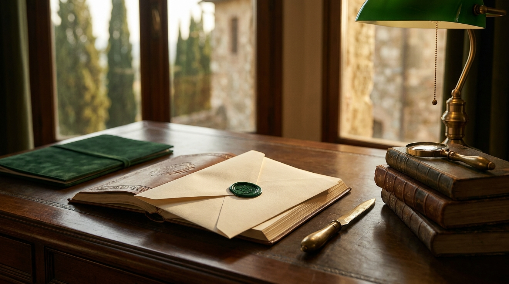

Disdetta dell'affitto: a quale indirizzo va inviata per essere valida
La Corte di Cassazione ha ribadito un principio rilevante per chi affitta o prende in locazione un immobile: la disdetta è efficace quando la comunicazione raggiunge l'indirizzo indicato nel contratto, anche se il destinatario non la ritira o è assente. Chi recapita alla giusta destinazione è tutelato; chi sbaglia indirizzo rischia di vedere la propria disdetta priva di effetti.

Il caso e la questione
La disdetta è la dichiarazione con cui una parte comunica all'altra la volontà di non rinnovare il contratto di locazione alla scadenza, o di esercitare la facoltà di recesso prevista dall'accordo o dalla legge. Si tratta di un atto unilaterale recettizio: produce effetti solo quando raggiunge il destinatario.
Da qui il dubbio ricorrente: a quale indirizzo va inviata? E cosa accade se il destinatario non è presente, ha cambiato casa o si rifiuta di ritirare la raccomandata? La Corte di Cassazione ha fornito indicazioni chiare, valorizzando il principio per cui ciò che conta è il recapito all'indirizzo corretto, non l'effettiva presa di conoscenza.
Inquadramento normativo
Il riferimento è l'art. 1334 del Codice civile, secondo cui gli atti unilaterali destinati a una determinata persona producono effetto dal momento in cui giungono a conoscenza della persona alla quale sono destinati.
A temperare questa regola interviene l'art. 1335 c.c., che introduce una presunzione fondamentale: la dichiarazione si considera conosciuta nel momento in cui giunge all'indirizzo del destinatario, salvo che questi provi di essere stato, senza sua colpa, nell'impossibilità di averne notizia. In altre parole, il mittente non deve dimostrare che il destinatario ha letto la lettera: è sufficiente provare che la comunicazione è arrivata al suo indirizzo.
Va inoltre considerato l'art. 1341 c.c. in tema di condizioni generali e clausole contrattuali: se il contratto individua espressamente un indirizzo per le comunicazioni, quella sede assume rilievo per stabilire dove la disdetta debba essere recapitata.
La Cassazione, con orientamento consolidato nel corso del 2022, ha applicato questi principi alla locazione: la disdetta inviata all'indirizzo indicato in contratto è efficace anche se il conduttore o il locatore non era presente al momento della consegna, o non ha ritirato il plico presso l'ufficio postale.
Implicazioni pratiche
Per il locatore che intende non rinnovare o recedere, il messaggio è netto: la disdetta produce effetti se inviata all'indirizzo contrattuale del conduttore, con un mezzo idoneo a documentare la spedizione e il recapito. L'eventuale assenza del destinatario o il mancato ritiro non salvano il conduttore dalla decorrenza del termine.
Per il conduttore vale il medesimo principio in senso inverso: la sua disdetta sarà valida solo se raggiunge l'indirizzo del locatore indicato nel contratto. Non basta sostenere di aver spedito la comunicazione: occorre poterne provare il recapito all'indirizzo corretto.
Il punto critico riguarda i cambi di residenza o di sede non comunicati alla controparte. Chi non aggiorna il proprio recapito assume il rischio che le comunicazioni inviate all'ultimo indirizzo noto siano comunque efficaci. La presunzione dell'art. 1335 c.c. tutela il mittente diligente, non protegge il destinatario che si sottrae alle comunicazioni.
È bene ricordare che molti contratti contengono una clausola specifica sul domicilio per le comunicazioni. Quella clausola, se presente, prevale: ignorarla espone al rischio di una disdetta inefficace.
Cosa fare in concreto
- Rileggete il contratto prima di inviare la disdetta e individuate l'indirizzo espressamente indicato per le comunicazioni; se manca, utilizzate la residenza o la sede risultante dall'accordo.
- Usate un mezzo tracciabile: raccomandata con avviso di ricevimento o PEC, così da poter documentare data di spedizione e recapito.
- Conservate ogni prova della spedizione e della consegna, comprese le ricevute di mancato ritiro o di compiuta giacenza, che valgono ai fini della presunzione di conoscenza.
- Verificate i termini di preavviso previsti dal contratto e dalla legge: l'indirizzo corretto non basta se la disdetta arriva oltre la scadenza utile.
- Comunicate per iscritto ogni cambio di residenza o di sede alla controparte, per evitare che vi siano opposte comunicazioni inviate al vecchio recapito.
Disclaimer
Contributo informativo a cura di Tamburro & Partners - Avv. Giuseppe Tamburro. Non costituisce parere legale.
Ogni contratto ha il suo equilibrio.
Se vuoi una revisione delle clausole o una redazione su misura, scrivi allo studio. Ti rispondiamo entro un giorno lavorativo.